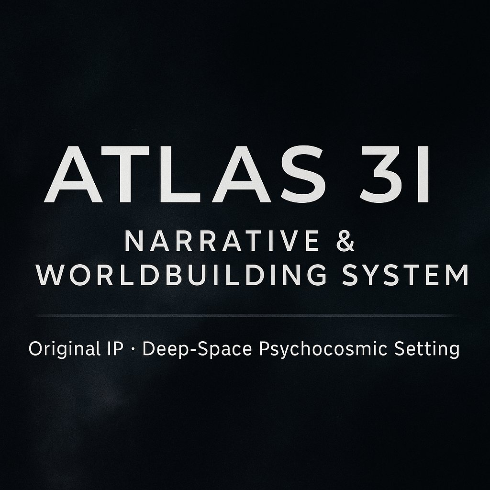
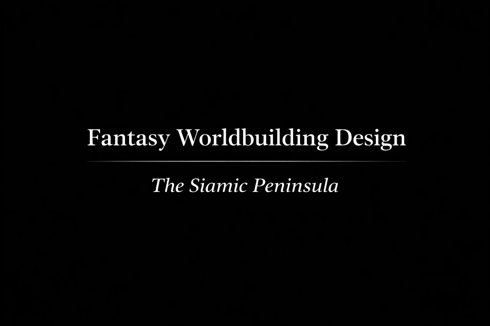
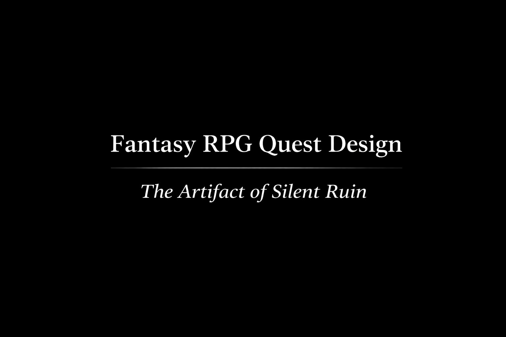
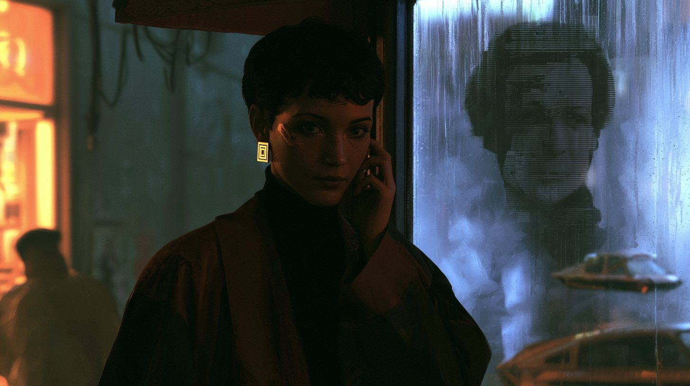
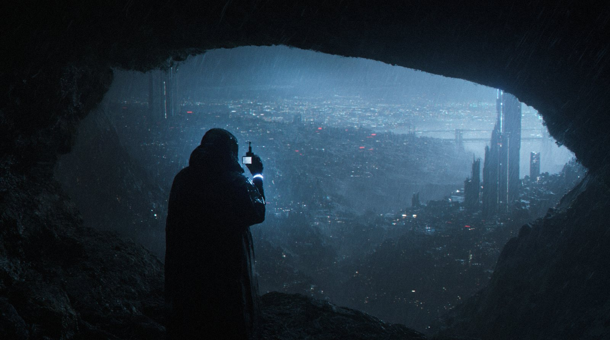

Original IP / Lore Architecture
ATLAS 3I / Second Earth
Deep-space psychocosmic setting with metaphysics, ship hierarchy, rituals, social strata, and narrative voice built into one world system.
Open PDF sampleI help turn early-stage ideas, scattered lore, faction concepts, and atmospheric fragments into clean worldbuilding systems, quest structures, tone guides, and presentation-ready proof.

Portfolio samples showing lore architecture, worldbuilding systems, quest structure, narrative tone control, and AI-assisted visual direction. Each sample is presented as proof of process, not just isolated writing.

Deep-space psychocosmic setting with metaphysics, ship hierarchy, rituals, social strata, and narrative voice built into one world system.
Open PDF sample
A fantasy setting package with factions, history, magic rules, central conflict, tone, and story hook designed for RPG or fictional IP development.
Open PDF sample
Branching RPG quest sample built from faction pressure, player choice, investigation, conflict, and alternate allegiance paths.
Open PDF sample
A voice and imagery guide for surreal metaphysical fiction: tone rules, recurring motifs, rhythm, POV logic, and cross-media style support.
Open PDF sample
Atmospheric sci-fi scene demonstrating voice, sensory control, metaphysical undertone, body-centric imagery, and cinematic scene rhythm.
Open PDF sample
AI-assisted visual references used to clarify atmosphere, setting mood, visual tone, story beats, and early pitch direction.
Ask for visual sequenceSimple, practical packages for indie developers, writers, small teams, and early-stage IP creators who need structure before production expands.
For teams with scattered lore, inconsistent factions, unclear rules, or a setting that needs structure.
For RPGs, visual novels, and interactive stories that need quest hooks and choice-driven structure.
For creators who need a presentable pitch page, visual mood direction, or proof-of-concept package.

Worldbuilding & Lore Documentation Specialist / Game Writing Support
I work at the intersection of story structure, worldbuilding, language, and visual narrative development. My strongest lane is turning abstract or fragmented creative material into coherent systems: lore bibles, faction logic, quest progression, tone guides, and presentation-ready proof for games and fictional IPs.
My background combines linguistics, teaching, game analysis, narrative systems, and AI-assisted creative workflows. I am especially useful in early development, when a project has strong ideas but needs structure, clarity, and a stronger bridge between story, world, and player experience.
Available for worldbuilding cleanup, lore documentation, quest design support, visual proof packaging, and early-stage story systems consulting.